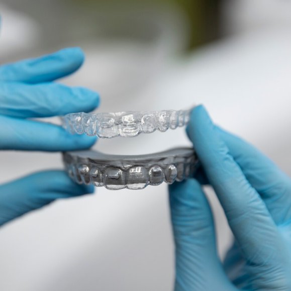

Alinhe seu sorriso com mais confiança, conforto e segurança
Na RC Odontologia Integrada, você recebe uma avaliação individual para entender seu caso, descobrir o aparelho mais indicado e iniciar um tratamento ortodôntico com clareza desde o primeiro atendimento.
O que nossos pacientes dizem
"Excelente atendimento! Equipe muito atenciosa e profissional. Fiz um tratamento de canal e não senti nada. Super recomendo!"
"Clínica moderna e limpa. Dr. Rogério é muito competente e explica tudo com clareza. Meu sorriso ficou lindo com as lentes de contato!"
"Melhor clínica odontológica de Curitiba! Atendimento humanizado, preços justos e resultados incríveis. Toda minha família se trata aqui."
"Fui muito bem atendida, trabalho excelente e a auxiliar muito simpática. Consultório limpo e arejado. Pontuais."
Mais do que alinhar dentes: um tratamento para melhorar sua confiança e seu dia a dia
A ortodontia pode transformar muito mais do que a aparência do sorriso. Em muitos casos, o tratamento ajuda a melhorar a mordida, facilitar a higienização, reduzir desgastes nos dentes e trazer mais conforto para falar, mastigar e sorrir com segurança.
Mais confiança em fotos e conversas
Sorrir sem tentar esconder os dentes pode mudar a forma como você se sente em situações sociais e profissionais.
Melhor encaixe da mordida
A correção ortodôntica pode ajudar a distribuir melhor as forças da mastigação e trazer mais equilíbrio para a boca.
Higienização mais fácil
Dentes melhor posicionados tendem a facilitar a escovação e o uso do fio dental, ajudando na prevenção de problemas bucais.
Menor desgaste dos dentes
Quando há mordida desalinhada, alguns dentes podem sofrer mais pressão. A ortodontia pode ajudar a reduzir esse impacto, conforme cada caso.
Mais conforto para mastigar e falar
O alinhamento e o ajuste da mordida podem contribuir para uma rotina mais confortável.
Tratamento planejado para você
A escolha do aparelho e o tempo de tratamento dependem da avaliação, da idade, da mordida e dos objetivos do paciente.
Clareza, cuidado e acompanhamento em cada etapa do seu tratamento
Avaliação individual
Avaliação do sorriso, mordida, dúvidas e objetivos antes de indicar qualquer aparelho.
Opções para diferentes rotinas
Aparelho fixo, autoligado e alinhadores podem ser considerados conforme seu estilo de vida.
Planejamento com segurança
Você entende o caminho do tratamento antes de começar, com explicações claras e orientação profissional.
Acompanhamento próximo
O tratamento ortodôntico exige cuidado contínuo, ajustes e acompanhamento para evoluir com segurança.
Condições facilitadas
Após a avaliação, a equipe apresenta opções de pagamento e parcelamento conforme o plano indicado.
Clínica completa em Curitiba
A RC Odontologia Integrada reúne estrutura, equipe e diferentes especialidades em um só lugar.
Descubra o melhor caminho para alinhar seu sorriso antes de começar
Cada sorriso tem uma necessidade diferente. Por isso, o valor, o tipo de aparelho e o tempo de tratamento só podem ser definidos depois de uma avaliação.
Na consulta, você entende o que precisa ser corrigido, quais opções fazem sentido para o seu caso e quais são as condições para iniciar o tratamento com segurança.
- Análise do alinhamento dos dentes e da mordida
- Orientação sobre o tipo de aparelho mais indicado
- Explicação sobre tempo estimado e acompanhamento
- Apresentação das condições de pagamento disponíveis
- Espaço para tirar dúvidas sobre dor, valores, estética e rotina
O valor da avaliação
Ela não é uma etapa a mais. É o momento em que você sai com clareza sobre o plano, as opções e o caminho para o seu tratamento ortodôntico.
Agendar minha avaliação ortodônticaImagine sorrir com mais segurança sem precisar esconder os dentes
Para muitas pessoas, iniciar um tratamento ortodôntico não é apenas uma decisão estética. É sobre se sentir melhor em uma foto, conversar com mais naturalidade e ter mais segurança em reuniões, eventos e momentos importantes.
Antes
Dúvida sobre qual aparelho usar, medo do preço, insegurança ao sorrir e receio de sentir dor.
Durante
Acompanhamento profissional, ajustes conforme a evolução e orientação em cada etapa.
Depois
Mais confiança, melhor alinhamento, mordida mais equilibrada e uma nova relação com o próprio sorriso.
Você não precisa decidir sozinho: o especialista indica a melhor opção para o seu caso
Cada aparelho tem indicações diferentes. Durante a avaliação, a equipe analisa sua mordida, o alinhamento dos dentes, sua rotina e seus objetivos para indicar a alternativa mais adequada.

Aparelho fixo metálico
Uma opção tradicional, eficiente e bastante utilizada para diferentes tipos de correção ortodôntica.
Aparelho estético
Indicado para quem busca uma alternativa mais discreta ao aparelho metálico, conforme avaliação.
Aparelho autoligado
Pode oferecer mais praticidade em alguns casos e é indicado conforme o planejamento do tratamento.
Alinhadores invisíveis
Uma alternativa removível e discreta para determinados casos, com planejamento individual.
Ortodontia para adultos
Nunca é tarde para avaliar seu sorriso. Adultos também podem realizar tratamento ortodôntico, desde que haja saúde bucal adequada.
Correção da mordida
Além da estética, a ortodontia pode ajudar no encaixe dos dentes e no equilíbrio da mastigação.
Ortodontia em Curitiba com orientação clara do início ao fim
A RC Odontologia Integrada atende em São Braz, Curitiba, com uma estrutura completa para cuidar do seu sorriso em diferentes fases do tratamento.
Aqui, o paciente não recebe apenas a indicação de um aparelho. Ele passa por uma avaliação, entende suas opções, tira dúvidas sobre valores, tempo de tratamento e rotina de acompanhamento, e recebe um plano compatível com seu caso.
A proposta é oferecer um atendimento próximo, organizado e transparente para que você se sinta seguro antes de iniciar.
O que isso muda na prática para você
Atendimento em clínica odontológica completa
Equipe multidisciplinar
Planejamento individual
Recursos digitais de diagnóstico
Atendimento para jovens e adultos
Localização em São Braz, Curitiba
Comece com uma avaliação e entenda as opções para o seu caso
Uma das principais dúvidas de quem pensa em usar aparelho é o valor do tratamento. Na ortodontia, o investimento depende do tipo de aparelho, da complexidade do caso, do tempo estimado e da necessidade de acompanhamento.
Por isso, a avaliação é o primeiro passo para apresentar um plano claro e condições de pagamento compatíveis com o tratamento indicado.
- Opções de parcelamento conforme avaliação
- Plano definido de acordo com o tipo de aparelho
- Possibilidade de tratamentos mais discretos ou convencionais
- Clareza sobre investimento antes de iniciar
- Orientação para escolher o melhor caminho com segurança
Agende sua avaliação ortodôntica
Preencha seus dados e a equipe da RC Odontologia Integrada entrará em contato para orientar você sobre os próximos passos.
Perguntas comuns antes de começar o tratamento ortodôntico
Quanto custa um tratamento ortodôntico?
O valor depende do tipo de aparelho, da complexidade do caso e do tempo de tratamento. Por isso, a avaliação é importante para indicar o plano mais adequado e apresentar as condições de pagamento.
Quanto tempo dura o tratamento com aparelho?
O tempo varia de acordo com o alinhamento dos dentes, a mordida, o tipo de aparelho e a resposta de cada paciente. Após a avaliação, a equipe consegue orientar uma estimativa mais realista.
Usar aparelho dói?
Pode haver desconforto nos primeiros dias ou após alguns ajustes, mas isso costuma fazer parte da adaptação. Durante o tratamento, a equipe orienta como lidar com cada fase.
Adultos podem usar aparelho?
Sim. Muitos adultos realizam tratamento ortodôntico. O mais importante é avaliar a saúde bucal, a mordida e os objetivos do paciente antes de iniciar.
Precisa extrair dentes para usar aparelho?
Nem sempre. A extração só é considerada quando existe indicação clínica. A avaliação serve justamente para entender se há espaço suficiente e qual é o melhor planejamento.
Alinhadores invisíveis valem a pena?
Os alinhadores podem ser uma excelente opção para alguns casos, especialmente para quem busca discrição e praticidade. Porém, nem todo caso tem a mesma indicação.
Quantas consultas são necessárias por mês?
A frequência depende do tipo de aparelho e da fase do tratamento. Em geral, o paciente precisa de acompanhamento periódico para ajustes e avaliação da evolução.
Qual aparelho é melhor para mim?
Não existe uma única resposta para todos os pacientes. A melhor opção depende da sua mordida, do alinhamento dos dentes, da rotina, dos objetivos e do planejamento feito pelo profissional.
Quer descobrir o melhor caminho para alinhar seu sorriso?
Agende uma avaliação ortodôntica na RC Odontologia Integrada e entenda quais opções de tratamento fazem sentido para o seu caso, sua rotina e seus objetivos.
Agendar pelo WhatsApp